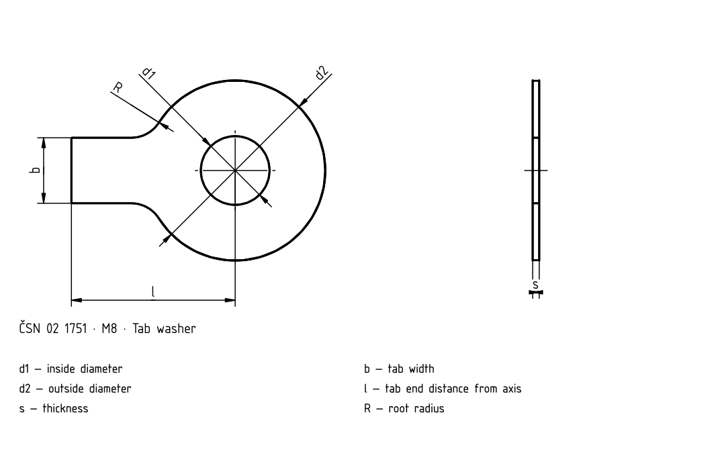

Lock washers
Historical source; numeric values and exceptions have not been fully verified against the current standard.

Lock washers · Dimensions
| d | Common / d _1 | Common / d _2 | ČSN 02 1751 / b | ČSN 02 1751 / l | ČSN 02 1751 / R | ČSN 02 1751 / t | ČSN 02 1753 / n | ČSN 02 1753 / u | ČSN 02 1753 / c | ČSN 02 1753 / t | ČSN 02 1753 / d _z | ČSN 02 1753 / h _z |
|---|---|---|---|---|---|---|---|---|---|---|---|---|
| M3 | 3.2 | 10 | 4 | 13 | 2.5 | 0.35 ±0.03 | – | – | – | – | – | – |
| M3.5 | 3.7 | 11 | 4 | 13 | 2.5 | 0.35 ±0.03 | – | – | – | – | – | – |
| M4 | 4.3 | 13 | 5 | 14 | 2.5 | 0.35 ±0.03 | 2.5 | 5.5 | 2.1 | 0.3 ±0.02 | 3 | 2.5 |
| M5 | 5.3 | 17 | 6 | 16 | 2.5 | 0.5 ±0.03 | 3.5 | 7 | 2.5 | 0.5 ±0.03 | 4 | 3 |
| M6 | 6.4 | 18 | 7 | 18 | 4 | 0.5 ±0.03 | 3.5 | 7.5 | 2.5 | 0.5 ±0.03 | 4 | 3 |
| M8 | 8.4 | 22 | 8 | 20 | 4 | 0.8 ±0.05 | 3.5 | 9 | 3.6 | 0.8 ±0.03 | 4 | 4 |
| M10 | 10.5 | 26 | 10 | 22 | 6 | 0.8 ±0.05 | 4.5 | 10 | 4.6 | 0.8 ±0.03 | 5 | 5 |
| M12 | 13 | 30 | 12 | 28 | 10 | 1 ±0.06 | 4.5 | 12 | 5 | 1 ±0.04 | 5 | 6 |
| M14 | 15 | 32 | 12 | 28 | 10 | 1 ±0.06 | 4.5 | 13 | 5 | 1 ±0.04 | 5 | 6 |
| M16 | 17 | 36 | 15 | 32 | 10 | 1 ±0.06 | 5.5 | 15 | 5 | 1 ±0.04 | 6 | 6 |
| M18 | 19 | 40 | 18 | 36 | 10 | 1 ±0.06 | 6 | 17 | 5 | 1 ±0.04 | 6 | 6 |
| M20 | 21 | 42 | 18 | 36 | 10 | 1 ±0.06 | 6 | 18 | 5 | 1 ±0.04 | 6 | 6 |
| M22 | 23 | 45 | 20 | 42 | 10 | 1 ±0.06 | 7 | 20 | 5 | 1 ±0.04 | 6 | 6 |
| M24 | 25 | 50 | 20 | 42 | 10 | 1 ±0.06 | 7 | 21 | 6 | 1 ±0.04 | 7 | 7 |
| M27 | 28 | 58 | 23 | 48 | 16 | 1.5 ±0.1 | 8 | 23 | 9 | 1.5 ±0.04 | 10 | 10 |
| M30 | 31 | 68 | 26 | 52 | 16 | 1.5 ±0.1 | – | – | – | – | – | – |
| M33 | 34 | 68 | 28 | 56 | 16 | 1.5 ±0.1 | – | – | – | – | – | – |
| M36 | 37 | 75 | 30 | 60 | 16 | 1.5 ±0.1 | – | – | – | – | – | – |
| M39 | 40 | 82 | 32 | 64 | 16 | 1.5 ±0.1 | – | – | – | – | – | – |
Lock washers · Dimensions
| d | Common / d _1 | Common / d _2 | ČSN 02 1751 / b | ČSN 02 1751 / l | ČSN 02 1751 / R | ČSN 02 1751 / t |
|---|---|---|---|---|---|---|
| M3 | 3.2 | 10 | 4 | 13 | 2.5 | 0.35 ±0.03 |
| M3.5 | 3.7 | 11 | 4 | 13 | 2.5 | 0.35 ±0.03 |
| M4 | 4.3 | 13 | 5 | 14 | 2.5 | 0.35 ±0.03 |
| M5 | 5.3 | 17 | 6 | 16 | 2.5 | 0.5 ±0.03 |
| M6 | 6.4 | 18 | 7 | 18 | 4 | 0.5 ±0.03 |
| M8 | 8.4 | 22 | 8 | 20 | 4 | 0.8 ±0.05 |
| M10 | 10.5 | 26 | 10 | 22 | 6 | 0.8 ±0.05 |
| M12 | 13 | 30 | 12 | 28 | 10 | 1 ±0.06 |
| M14 | 15 | 32 | 12 | 28 | 10 | 1 ±0.06 |
| M16 | 17 | 36 | 15 | 32 | 10 | 1 ±0.06 |
| M18 | 19 | 40 | 18 | 36 | 10 | 1 ±0.06 |
| M20 | 21 | 42 | 18 | 36 | 10 | 1 ±0.06 |
| M22 | 23 | 45 | 20 | 42 | 10 | 1 ±0.06 |
| M24 | 25 | 50 | 20 | 42 | 10 | 1 ±0.06 |
| M27 | 28 | 58 | 23 | 48 | 16 | 1.5 ±0.1 |
| M30 | 31 | 68 | 26 | 52 | 16 | 1.5 ±0.1 |
| M33 | 34 | 68 | 28 | 56 | 16 | 1.5 ±0.1 |
| M36 | 37 | 75 | 30 | 60 | 16 | 1.5 ±0.1 |
| M39 | 40 | 82 | 32 | 64 | 16 | 1.5 ±0.1 |
Lock washers · Dimensions
| d | ČSN 02 1753 / n | ČSN 02 1753 / u | ČSN 02 1753 / c | ČSN 02 1753 / t | ČSN 02 1753 / d _z | ČSN 02 1753 / h _z |
|---|---|---|---|---|---|---|
| M3 | – | – | – | – | – | – |
| M3.5 | – | – | – | – | – | – |
| M4 | 2.5 | 5.5 | 2.1 | 0.3 ±0.02 | 3 | 2.5 |
| M5 | 3.5 | 7 | 2.5 | 0.5 ±0.03 | 4 | 3 |
| M6 | 3.5 | 7.5 | 2.5 | 0.5 ±0.03 | 4 | 3 |
| M8 | 3.5 | 9 | 3.6 | 0.8 ±0.03 | 4 | 4 |
| M10 | 4.5 | 10 | 4.6 | 0.8 ±0.03 | 5 | 5 |
| M12 | 4.5 | 12 | 5 | 1 ±0.04 | 5 | 6 |
| M14 | 4.5 | 13 | 5 | 1 ±0.04 | 5 | 6 |
| M16 | 5.5 | 15 | 5 | 1 ±0.04 | 6 | 6 |
| M18 | 6 | 17 | 5 | 1 ±0.04 | 6 | 6 |
| M20 | 6 | 18 | 5 | 1 ±0.04 | 6 | 6 |
| M22 | 7 | 20 | 5 | 1 ±0.04 | 6 | 6 |
| M24 | 7 | 21 | 6 | 1 ±0.04 | 7 | 7 |
| M27 | 8 | 23 | 9 | 1.5 ±0.04 | 10 | 10 |
| M30 | – | – | – | – | – | – |
| M33 | – | – | – | – | – | – |
| M36 | – | – | – | – | – | – |
| M39 | – | – | – | – | – | – |